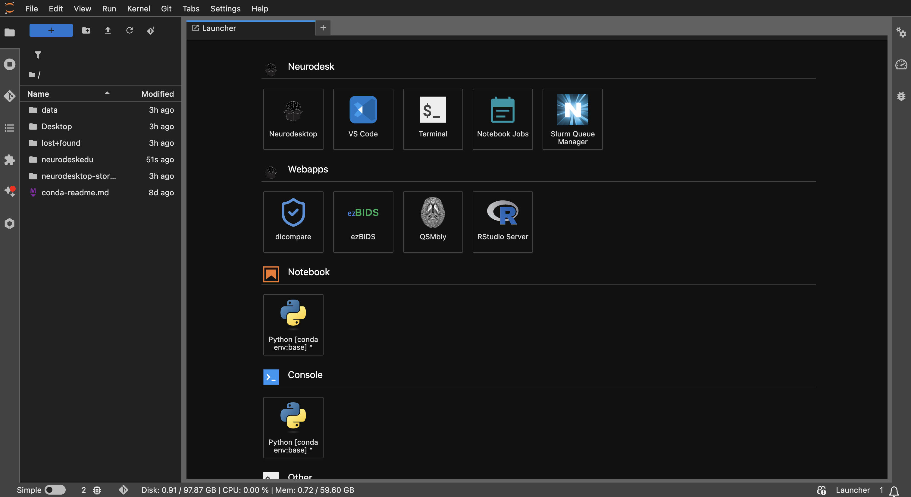
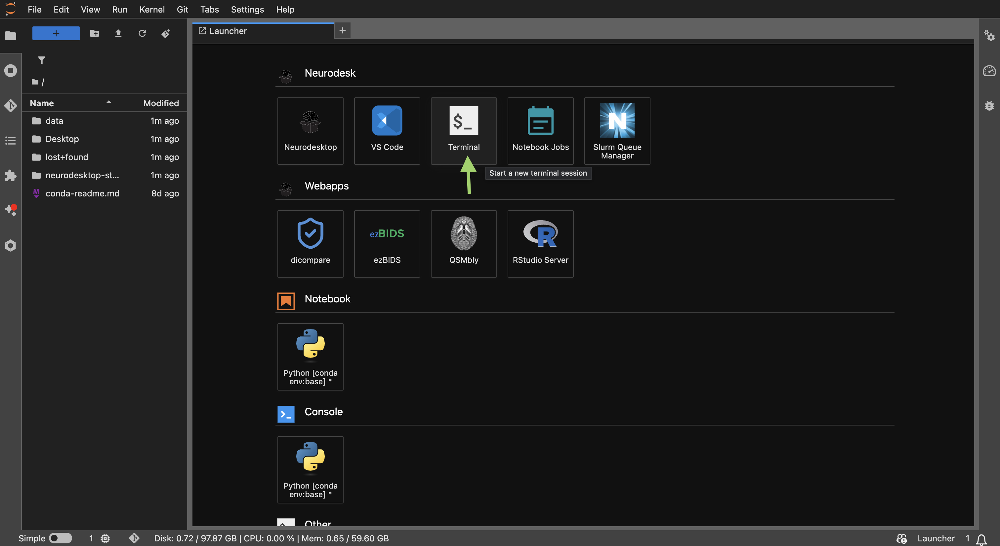
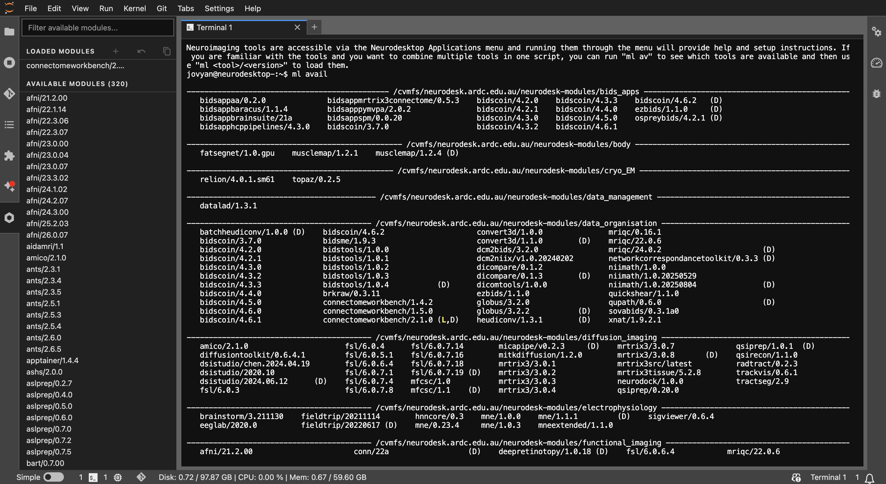
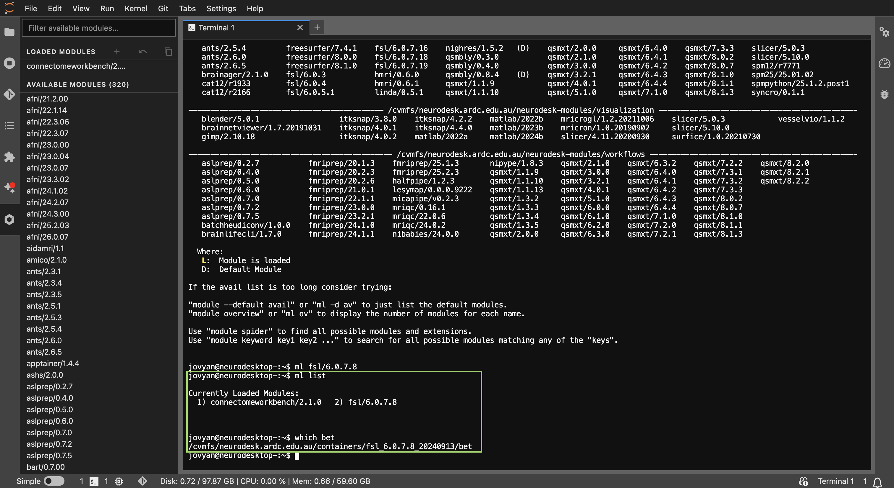
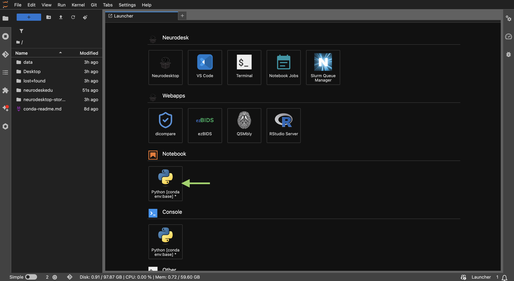
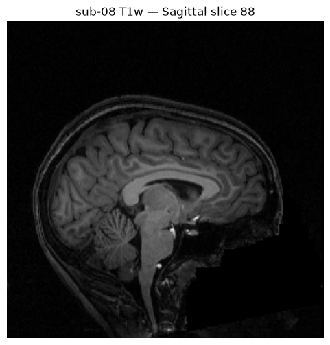
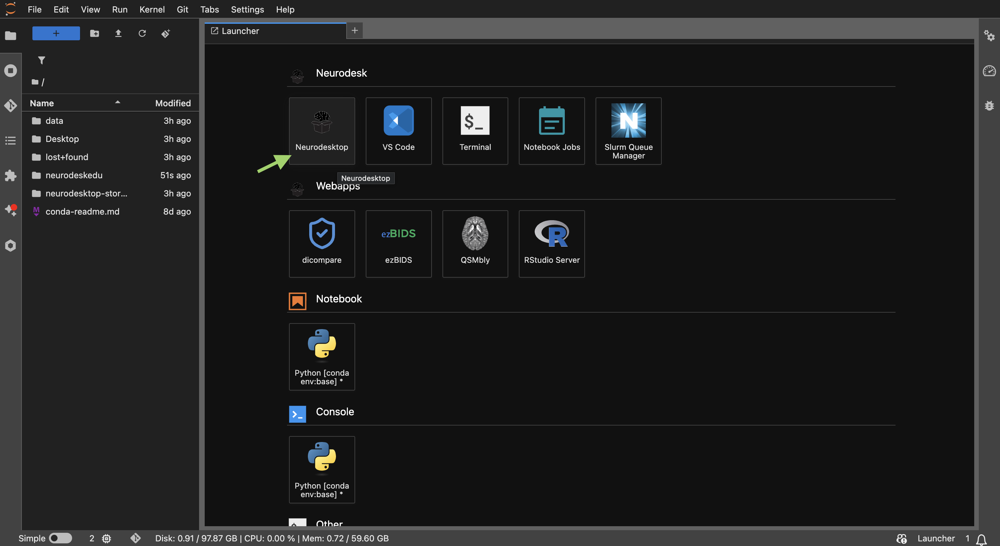
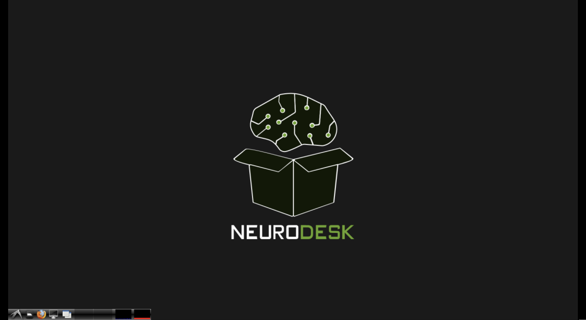
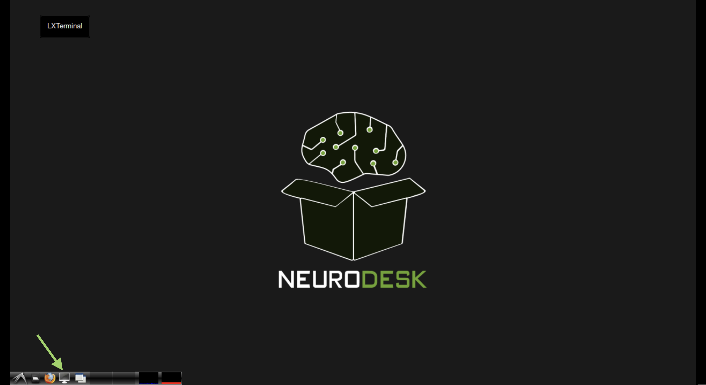
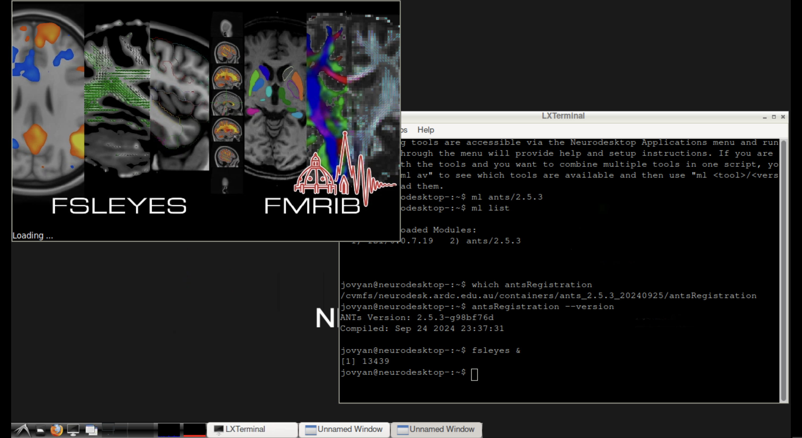

Accessing Tools in Neurodesk#
Author: Michèle Masson-Trottier
Date: 2026-03-10
License:
Note: If this notebook uses neuroimaging tools from Neurocontainers, those tools retain their original licenses. Please see Neurodesk citation guidelines for details.
Citation and Resources#
Tools included in this workflow#
Neurodesk — Renton, A.I., Dao, T.T., Johnstone, T. et al. Neurodesk: an accessible, flexible and portable data analysis environment for reproducible neuroimaging. Nat Methods 21, 804–808 (2024). doi:10.1038/s41592-024-02237-2
Lmod — McLay, R., Schulz, K.W., Barth, W.L., Minyard, T. Best Practices for the Deployment and Management of Production HPC Clusters. SC11, (2011). https://lmod.readthedocs.io
FSL — Jenkinson, M., Beckmann, C.F., Behrens, T.E.J., Woolrich, M.W., Smith, S.M. FSL. NeuroImage 62, 782-790 (2012). doi:10.1016/j.neuroimage.2011.09.015
FreeSurfer — Fischl, B. FreeSurfer. NeuroImage 62, 774-781 (2012). doi:10.1016/j.neuroimage.2012.01.021
ANTs — Avants, B.B., Tustison, N.J., Song, G., et al. A reproducible evaluation of ANTs similarity metric performance in brain image registration. NeuroImage 54, 2033-2044 (2011). doi:10.1016/j.neuroimage.2010.09.025
Dataset#
OpenNeuro ds000102 — Kelly, A.M.C. et al. (2008). Competition between functional brain networks mediates behavioral variability. NeuroImage 39, 527-537. doi:10.1016/j.neuroimage.2007.08.008. Dataset available at OpenNeuro.
Educational resources#
Statement of Need#
Neurodesk provides access to a large collection of neuroimaging tools through containerised applications. New users often ask: how do I actually run my tools? The answer depends on which interface you’re using.
This tutorial is for anyone getting started with Neurodesk — from first-time users to experienced researchers exploring a different interface. It covers the four main ways to access tools (Jupyter Terminal, Jupyter Notebook, Neurodesktop Terminal, and the Neurodesktop Application Menu), and demonstrates that all methods share the same underlying module system by loading a different tool in each section — FSL, FreeSurfer, and ANTs — then confirming they are all available together at the end.
Learning Objectives#
After completing this tutorial, you will be able to:
Use
mlcommands to discover, load, and manage neuroimaging tools in a terminalLoad tools programmatically inside a Jupyter notebook using
await module.load()Launch tools from the Neurodesktop terminal and application menu
Choose the appropriate access method for different tasks
Combine tools loaded through different methods in a single session
Table of Contents#
1. Jupyter Terminal — Loading FSL
2. Jupyter Notebook — Loading FreeSurfer
3. Neurodesktop Terminal — Loading ANTs
4. Neurodesktop Application Menu
5. Putting It All Together
6. Comparison and Quick Reference
Load software tools and install dependencies#
%%capture
# Install packages not included in the Neurodesk base image
!pip install nibabel matplotlib
1. Jupyter Terminal — Loading FSL#
The Jupyter Terminal gives you a full shell session inside the Neurodesk environment. This is the most direct way to interact with tools, and it works identically to using a terminal on an HPC system with environment modules.

The JupyterLab interface in Neurodesk — this is where you’ll find the Terminal, Notebook, sidebar module panel, and file browser.In this section, we’ll use it to load FSL.
Launching a terminal#
From JupyterLab, you can open a terminal in two ways:
Launcher tab — click Terminal under “Other”
Menu — File > New > Terminal

The JupyterLab Launcher showing the Terminal option under “Neurodesk”.Loading FSL with ml#
Once you have a terminal open, you use the ml (module load) command to activate tools:
# List all available modules
ml avail

Example output ofml avail showing the list of available tools and versions.
# Load FSL
ml fsl/6.0.7.8
# Verify it's loaded
ml list
# Check that FSL tools are accessible
which bet

Example output ofml list showing the tools and versions that have been loaded in the terminal.
How ml works under the hood#
ml is a shorthand for the module load command from Lmod. When you run ml fsl/6.0.7.8, Neurodesk:
Fetches the corresponding container (if not already cached)
Sets up environment variables (
PATH,LD_LIBRARY_PATH, etc.)Makes all executables from that tool available in your shell
This is transparent — once loaded, you just use the tool commands directly.
Key terms
mlShorthand for
module load. Used to load, unload, list, and search for tools.ml availLists all available tools and versions on the system.
ml listShows which tools are currently loaded in your session.
ml purgeUnloads all currently loaded tools, resetting your environment.
ml spider <keyword>Searches for tools matching a keyword.
Managing modules#
# Unload a specific module
ml -fsl
# Purge all loaded modules
ml purge
# Load a different version
ml fsl/6.0.7.4
import module
# Purge all loaded modules
await module.purge()
# Load a different version
await module.load('fsl/6.0.7.4')
# List what's loaded
await module.list()
Troubleshooting: Jupyter Terminal#
Tip
“Use ml ml list. If the container is fetched for the first time, there may be a short delay.
“Module not found” error — Check the exact module name with ml avail | grep <toolname>. Module names are case-sensitive.
Slow first load — The first time you load a tool, the container image is pulled. Subsequent loads will be near-instant thanks to caching.
2. Jupyter Notebook — Loading FreeSurfer#
When working inside a Jupyter notebook (like this one), you can load Neurodesk tools programmatically using Python. This is ideal for reproducible analysis pipelines where you want your tool setup documented alongside your code.

Neurodesk launcher window to open a new Jupyter Notebook.In this section, we’ll load FreeSurfer to demonstrate the notebook interface.
The module interface#
Neurodesk provides a Python module package that mirrors the terminal’s ml commands using async/await syntax:
import module
# Start with a clean slate
await module.purge()
# Load FreeSurfer
await module.load('freesurfer/7.4.1')
# Verify what's loaded
await module.list()
['freesurfer/7.4.1']
Note
The await keyword is required because module loading is an asynchronous operation — the container may need to be fetched or initialised. Jupyter’s built-in event loop handles this seamlessly.
Running shell commands from a notebook#
Once FreeSurfer is loaded, you can call its executables using the ! shell escape or subprocess:
# Using shell escape — check that recon-all is available
!recon-all --version
freesurfer-linux-centos8_x86_64-7.4.1-20230613-7eb8460
# Using subprocess — more control over output
import subprocess, os
result = subprocess.run(['mri_info', '--version'], capture_output=True, text=True, env=os.environ)
print(result.stdout.strip() or result.stderr.strip())
mri_info freesurfer 7.4.1
Using Python wrappers#
Some tools also have native Python interfaces. After loading the module, you can import them directly. For example, nibabel can read NIfTI and FreeSurfer .mgz files, letting you inspect and manipulate neuroimaging data directly in Python.
Let’s download a T1-weighted brain scan from OpenNeuro dataset ds000102 using DataLad, then load it with nibabel:
%%bash
# Install the OpenNeuro dataset using DataLad
datalad install https://github.com/OpenNeuroDatasets/ds000102.git
# Download a single T1w scan for one subject
cd ds000102 && datalad get sub-08/anat/sub-08_T1w.nii.gz
install(ok): /home/jovyan/workspace/books/tutorials/about_neurodesk/ds000102 (dataset)
get(ok): sub-08/anat/sub-08_T1w.nii.gz (file) [from s3-PUBLIC...]
[INFO] Attempting a clone into /home/jovyan/workspace/books/tutorials/about_neurodesk/ds000102
[INF
O] Attempting to clone from https://github.com/OpenNeuroDatasets/ds000102.git to /home/jovyan/worksp
ace/books/tutorials/about_neurodesk/ds000102
[INFO] Start enumerating objects
[INFO] Start counting objects
[INFO] Start compressing objects
[INFO] Start receiving objects
[INFO] Start resolving deltas
[INFO] Completed clone attempts for Dataset(/home/jovyan/workspace/books/tutorials/about_neurodesk/d
s000102)
[INFO] Remote origin not usable by git-annex; setting annex-ignore
[INFO] https://github.com/OpenNeuroDatasets/ds000102.git/config download failed: Not Found
[INFO] Remote origin not usable by git-annex; setting annex-ignore
[INFO] https://github.com/OpenNeuroDatasets/ds000102.git/config download failed: Not Found
[INFO] access to 1 dataset sibling s3-PRIVATE not auto-enabled, enable with:
| datalad siblings -d
"/home/jovyan/workspace/books/tutorials/about_neurodesk/ds000102" enable -s s3-PRIVATE
import nibabel as nib
import matplotlib.pyplot as plt
# Load the T1w NIfTI image
img = nib.load('ds000102/sub-08/anat/sub-08_T1w.nii.gz')
# Inspect basic properties
print(f"Image shape: {img.shape}")
print(f"Voxel size (mm): {img.header.get_zooms()}")
print(f"Data type: {img.get_data_dtype()}")
# Display a sagittal slice
data = img.get_fdata()
mid_sagittal = data.shape[0] // 2
plt.figure(figsize=(6, 6))
plt.imshow(data[mid_sagittal, :, :].T, cmap='gray', origin='lower')
plt.title(f'sub-08 T1w — Sagittal slice {mid_sagittal}')
plt.axis('off')
plt.show()
Image shape: (176, 256, 256)
Voxel size (mm): (np.float32(1.0), np.float32(1.0), np.float32(1.0))
Data type: int16

Troubleshooting: Jupyter Notebook#
Tip
ModuleNotFoundError: No module named 'module' — You are likely running this notebook outside of the Neurodesk environment. The module package is pre-installed in Neurodesk’s Jupyter kernel.
SyntaxError on await — Make sure you are using a Jupyter notebook (.ipynb) — await at the top level is supported by IPython’s built-in event loop. It won’t work in a plain .py script without asyncio.
Tool command not found after module.load() — The module sets environment variables in the notebook’s kernel process. If using ! shell commands, they inherit this environment. If spawning subprocesses differently, you may need to pass the environment explicitly via env=os.environ.
3. Neurodesktop Terminal — Loading ANTs#
The Neurodesktop provides a full graphical Linux desktop environment that you can access directly from JupyterLab. To open it, click the Neurodesktop button in the JupyterLab Launcher (under “Notebook”).

Click “Neurodesktop” in the JupyterLab Launcher to open the desktop environment in a new tab.Once open, a window will open. You’ll see a Linux desktop with a taskbar, file manager, and application menu.

The Neurodesktop environment — a full Linux desktop with taskbar, file manager, and application menu.In this section, we’ll load ANTs from the Neurodesktop’s LXTerminal to demonstrate that the same module system works across all interfaces.
Opening a terminal in Neurodesktop#
From the Neurodesktop, open LXTerminal from the taskbar at the bottom of the screen.

The Neurodesktop environment with LXTerminal open from the taskbar.Loading ANTs with ml#
The ml command works identically in the Neurodesktop terminal:
# Load ANTs
ml ants/2.5.3
# Verify it's loaded
ml list
# Check that ANTs tools are accessible
which antsRegistration
antsRegistration --version
This is the same module system as the Jupyter Terminal — the only difference is that here you also have access to a full graphical display, so you can launch GUI tools alongside your command-line work.
Launching GUI tools from the terminal#
One advantage of the Neurodesktop terminal is that you can launch graphical tools directly:
# Load FSL and launch FSLeyes
ml fsl/6.0.7.8
fsleyes &
Note
The & at the end runs the GUI application in the background so you can continue using the terminal.

FSLeyes launched from the Neurodesktop terminal, displaying a brain image.5. Putting It All Together#
Throughout this tutorial, we loaded different tools through different methods:
FSL via the Jupyter Terminal (
ml fsl/6.0.7.8)FreeSurfer via the Jupyter Notebook (
await module.load('freesurfer/7.4.1'))ANTs via the Neurodesktop Terminal (
ml ants/2.5.3)FSLeyes via the Neurodesktop Application Menu (point-and-click)
All methods use the same underlying module system. In a notebook, we can load all three together and verify they are available side by side:
import module
await module.purge()
# Load all three tools — each originally demonstrated via a different method
await module.load('fsl/6.0.7.8') # Method 1: Jupyter Terminal
await module.load('freesurfer/7.4.1') # Method 2: Jupyter Notebook
await module.load('ants/2.5.3') # Method 3: Neurodesktop Terminal
await module.list()
['fsl/6.0.7.8', 'freesurfer/7.4.1', 'ants/2.5.3']
# Verify all three tools are accessible
import subprocess, os
tools = {
'FSL': ['cat', os.path.join(os.environ.get('FSLDIR', ''), 'etc', 'fslversion')],
'FreeSurfer': ['recon-all', '--version'],
'ANTs': ['antsRegistration', '--version'],
}
for name, cmd in tools.items():
result = subprocess.run(cmd, capture_output=True, text=True, env=os.environ)
version = (result.stdout.strip() or result.stderr.strip()).splitlines()[0]
print(f"{name}: {version}")
FSL: 6.0.7.8
FreeSurfer: freesurfer-linux-centos8_x86_64-7.4.1-20230613-7eb8460
ANTs: ANTs Version: 2.5.3-g98bf76d
Regardless of whether you load tools from a Jupyter terminal, a notebook cell, or the Neurodesktop — they all share the same environment. You can mix and match access methods within a single session.
Which method should I use?
- I want to run a quick command
Use the Jupyter Terminal — open one from the Launcher and type
ml <tool>.- I’m building an analysis pipeline
Use the Jupyter Notebook —
await module.load()keeps your setup documented alongside your code.- I need to visualise data with a GUI tool
Use the Neurodesktop Terminal or Application Menu — both give you access to graphical applications.
- I’m new to the command line
Use the Sidebar Panel or Application Menu — point-and-click, no commands needed.
6. Comparison and Quick Reference#
Feature |
Sidebar Panel |
Jupyter Terminal |
Jupyter Notebook |
Neurodesktop Terminal |
Neurodesktop App Menu |
|---|---|---|---|---|---|
Interface |
Point-and-click |
Command line |
Python cells |
Command line (GUI display) |
Point-and-click |
Load command |
Click “Load” |
|
|
|
Automatic |
List available |
Browse + search |
|
|
|
Browse categories |
List loaded |
“Loaded Modules” panel |
|
|
|
— |
Unload |
Click “Unload” |
|
— |
|
— |
Purge all |
— |
|
|
|
— |
Search |
Filter box |
|
|
|
— |
GUI tools |
No display |
No display |
No display |
Full support |
Full support |
Reproducibility |
Manual |
Script it yourself |
Excellent (code + docs) |
Script it yourself |
Manual |
Best for |
Quick discovery + load |
Quick tasks, scripting |
Analysis pipelines, teaching |
Visualisation + CLI |
Users new to CLI |
Terminal caveat |
Must open new terminal |
— |
— |
— |
— |
Dependencies in Jupyter/Python#
Using the package watermark to document system environment and software versions used in this notebook.
%load_ext watermark
%watermark
%watermark --iversions
Last updated: 2026-08-27T22:40:13.527490+00:00
Python implementation: CPython
Python version : 3.13.14
IPython version : 9.12.0
Compiler : GCC 14.3.0
OS : Linux
Release : 6.8.0-111-generic
Machine : x86_64
Processor : x86_64
CPU cores : 16
Architecture: 64bit
matplotlib: 3.11.0
nibabel : 5.4.2